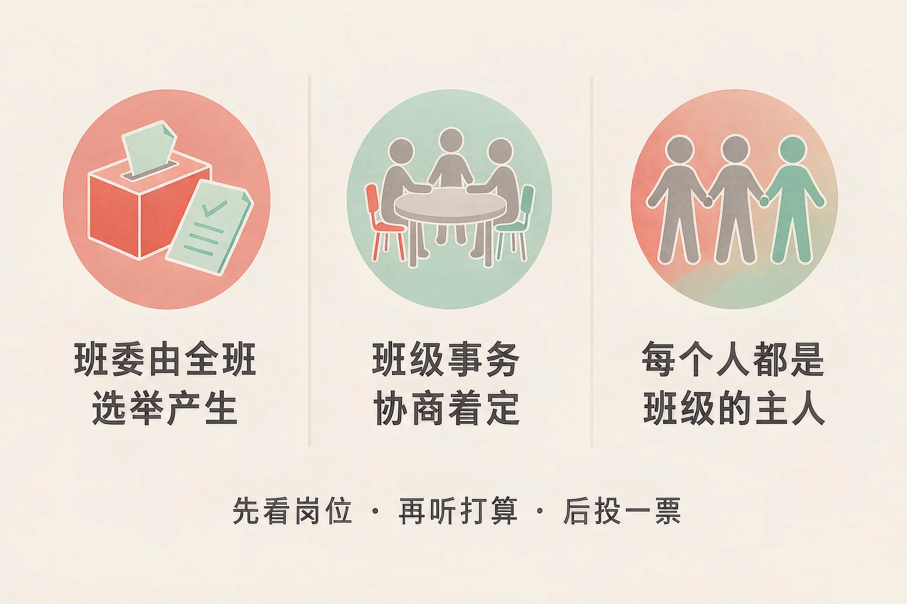
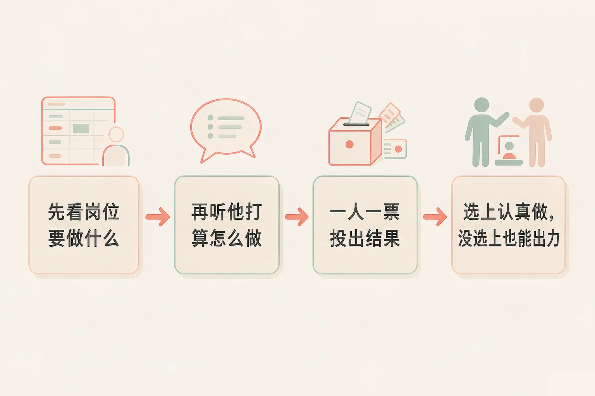
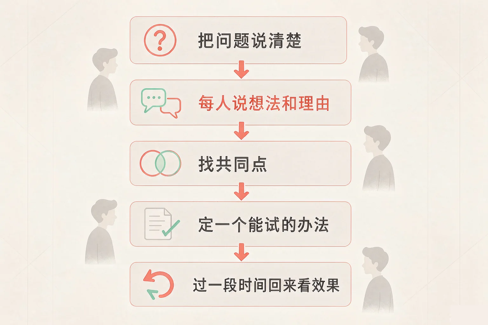

Gallery
v1.0.0 · skill v7.22.0
小学五年级 · 中华优秀传统文化
班里的日子，凭什么要我来操心？

选一个你真正想知道的问题，后面的活动都会围着它转。
选择或输入后，这节课会围绕你的问题展开。
先凭直觉选一个，选完立刻看到解释——错了也没关系，正好知道要重点听哪里。
1. 班委会的成员是怎么产生的？
班委会是班级里由同学们推选出来、为大家服务的一小组人，成员由全班同学选举产生。错因提醒：常见错误是误认为「班委是老师安排好的」——选举的意思，就是这件事由全班同学一起定。
2. 改选班委的时候，下面哪种做法更合适？
班委是替全班做事的，要选的是能把事做好的人；你的一票也在决定这个班以后怎么样。错因提醒：容易把「关系好」误认为「合适」——关系好不好是一回事，能不能把事做好是另一回事。
3. 班里想解决「课间太吵」，下面哪种做法最可能真的管用？
一起商量出来的办法，大家才愿意守；先试一段时间，才知道管不管用。错因提醒：有的同学误认为「规定越严越管用」——做不到的规定，第一天之后就成了纸上的字。
为什么要学这一课？
我们每天都在班里上课、值日、借书，班里的日子好不好过，其实和每个人都有关系（And）；可一到改选班委，不少同学要么只看关系好不好，要么觉得「反正我不当，选谁都一样」（But）；所以这节课先弄清楚班委是怎么选出来的，再学会把班里的事一起商量着定（Therefore）。
班委会是指班级里由同学们推选出来、为大家服务的一小组人，比如班长、学习委员、体育委员、劳动委员。它的成员由全班同学选举产生。

一句可以随身带的话
先看岗位、再听打算、后投一票；选上的人认真做，没选上的人也能继续出力。
有的同学误认为「选班委就是看平时关系好不好」。可班委是替全班做事的，要看的是他打算怎么做、平时做得怎么样；关系好不好是一回事，能不能把事做好是另一回事。
🔍 深层理解 换个角度再看一遍这件事，看看能不能说出背后的原理。
看见它：同样是一票，一票是「他跟我玩得好」，一票是「他的办法我听得明白」，两票投出去，班里的日子会很不一样。
解释它：为什么要先看岗位再投票？因为班委不是一个荣誉称号，而是一件具体的事；知道了要做什么，才知道谁合适。
迁移它：这套看法在家里、在小组里也一样：要交给别人一件事，先看这件事要做什么，再看他愿不愿意做、做起来靠不靠得住。
点开一个班务问题，从三个办法里选一个。选完会告诉你执行下去会发生什么、谁会受影响，还有一个别的思路。
先点一个班务问题。
协商是指把问题摆到桌面上，每个人把自己想到的办法提出来、把理由说清楚，一起找一个大家都愿意试一试的方案。

判断一个办法好不好，看三条
能不能解决大家的问题；能不能做到，人手和时间够不够；有没有照顾到少数同学——总有值日赶不上、家里有事的同学，办法里给他们留一条路，才算真的解决大家的问题。
有的同学把「商量」搞混成「听谁的嗓门大」，或者误认为「少数服从多数就够了」。商量要的是把理由讲出来；只靠「罚站」「不许上体育课」这类办法，大家守规矩是因为怕，不是因为明白了为什么。
🔍 深层理解 换个角度再看一遍这件事，看看能不能说出背后的原理。
看见它：同样是「安静一点」，一条是「谁说话就记名字」，一条是「走廊说话小点声，教室留个安静角落」——后一条大家愿意守，因为它照顾到了想说话的人。
解释它：为什么一定要留第五步「回头看」？因为定办法的时候，谁也不知道它到底管不管用；试过再看，办法才越改越对。
迁移它：班级公约里也可以一起商量「哪些事我们不做」：不玩有危险的游戏，遇到有人在校外递烟，及时告诉老师和家里人——保护好自己，也是主人该做的一件事。
下面五张步骤卡是打乱的。按正确的先后顺序一张一张点下去：点对了就排进流程图，点错了会告诉你这一步该在哪儿想。
先点一张步骤卡。
情境：新学期要改选班委，小雨想当体育委员，小航也想当。有同学说，两个都是我好朋友，投谁好呢；还有同学说，反正我不当，选谁都一样。
有的同学误认为「选班委就是看平时关系好不好」，可真正该看的是「他打算怎么做、平时做得怎么样」。想清楚这一点，你手里那一票就不再是随手一投了。
先凭直觉选一个，选完立刻看到解释——错了也没关系，正好知道要重点听哪里。
1. 关于班委会的选举，下面哪句话说得对？
班委是替全班做事的，选举就是把这件事交给全班一起定；要看的是他打算怎么做、做起来靠不靠得住。错因提醒：常见错误是误认为「关系好就合适」——关系好不好是一回事，能不能把事做好是另一回事。
2. 班里想解决「图书角乱了、还丢书」，下面哪种做法更好？
商量出来的办法既解决借还，又留了一步回头看；锁起来是把问题藏起来，赔书只解决了这一件。错因提醒：容易把「不出事」误认为「解决了问题」——书不丢，可图书角也没人用了。
3. 关于班级议事，下面哪句话说得对？
商量要的是把理由讲出来；办法定完还要试、还要看，才能越改越对。错因提醒：有的同学把「商量」搞混成「谁声音大谁说了算」——总有值日赶不上、家里有事的同学，办法里给他们留一条路，才算真的解决大家的问题。
三步各选一个：我想提的问题是 → 我打算这样试 → 怎么知道有没有用。选完，我会把它拼成一份可以念给班委听的提案。
从第一步开始选。
提案写好了，请念一遍给班委或者同桌听。听完以后问一句：这个办法做得到吗？还有谁没被照顾到？
把它写下来：
如果给你一次在班会课上发言的机会，你最想为班里提哪一件事？试着自己设计一条班级小约定，写清楚问题和你的办法。
先凭直觉选一个，选完立刻看到解释——错了也没关系，正好知道要重点听哪里。
1. 改选的时候，有同学在班里挨个说：你投我，下次我也帮你。下面哪种看法更合适？
选班委是把班级的事交给人做，判断的标准是「他适不适合、做不做得来」。错因提醒：常见错误是误认为「投票是私人的事，人情往来很正常」——可这一票关系到全班以后的日子。
2. 值日表排出来以后，有同学说自己放学要去接弟弟，总赶不上。下面哪种做法更好？
办法要照顾到少数同学，换一换并不影响值日这件事本身；写清楚换班记录，也不用互相埋怨。错因提醒：有的同学误认为「讲情面就是不公平」——能让每个人做得到的安排，才是真的公平。
3. 班上有人在校外被递烟，还被叫上别人一起去。作为班级的一员，下面哪种做法更好？
先离开、再让大人知道，同时让班上有一句一致的说法，谁碰到都知道怎么应对。错因提醒：容易把「不说就是帮朋友」误认为「保护朋友」——瞒着不说，下一次受影响的可能还是他。
一句口诀：先看岗位、再听打算、后投一票；摆问题、说想法、找共同点、定试行、回头看。班规是大家一起定的，也要大家一起守。
给别人讲一遍：请用「选举」「协商」这两个词，给家里人讲一件最近班里定下来的事，并说说这件事是怎么定下来的。
再动一动手：写一写你打算为班级做的一件小事，写清楚做什么、什么时候做、怎么知道做好了。
三层练习，做完第一、二层就算通关；第三层留给愿意继续探索的同学。
⭐ 基础巩固（必做）
⭐⭐ 能力应用（必做）
⭐⭐⭐ 迁移挑战（选做）
左边是学它之前要先会的，右边是学会之后可以继续探索的，下面是同一领域的伙伴知识。
图谱正在加载：首次进入需下载知识索引（约 1–3 秒），加载完成后本行会自动消失。